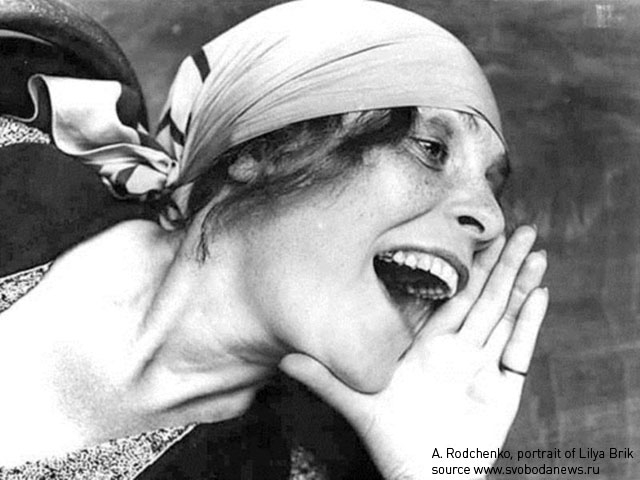

rt.com
rt.com- RT versions:
- روسيا اليوم
- Noticias
- Инотв
- RTД


Russian Constructivism Art
Constructivism art emerged in Soviet Russia in the 1920-30s. It affected visual arts, architecture, photography and applied arts. The artistic method of Russian constructivism art is characterized by strictness and simplicity of design, belief in art as a practice for social purposes and industrial feel.
One of the founders of Russian constructivism art is Aleksander Rodchenko—his revolutionary approach to photography and design saw the viewer engaging with an artwork. His photography was documentary and his unconventional foreshortenings were shocking.
A pinch of utopia to Russian constructivism art was added by Vladimir Tatlin—the author of the architectural project, which was supposed to surpass the Eiffel Tower in Paris. The tall iron, steel and glass tower, called Monument to the Third International, or Tatlin's Tower was the embodiment of Russian constructivism in architecture. The project was never realized due to financial issues, as was his other project - flying machine, aptly called 'letatlin'.
The legacy of Russian constructivism art is varied and prolific: modern trendsetters find inspiration in designs created by masters of the era, crane-like constructions used by constructivist architects are repeated in modern structures, bold geometrical posters are enjoying popular interest today with museums having special sections devoted to them and modern graphic designers using styles based on them.


- Legal disclaimer
- Feedback
- Contact us
- What it is all about
- Words in pictures
- © Autonomous Nonprofit Organization "TV-Novosti", 2005 – 2020. All rights reserved.